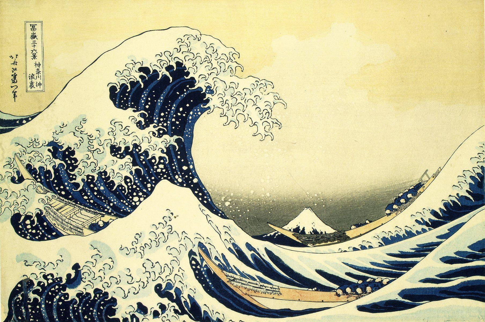

Before we name anything, look. Spend a full minute with the print below. Do not read the caption yet. Just let your eye move the way water moves.

Look at the foam. It does not just spray, it claws, curling into dozens of small hooked fingers that repeat across the crest like a pattern stamped again and again. Three low fishing boats sit beneath the curl, and far in the background, dwarfed by the wave, sits Mount Fuji, the calm subject this whole print series was actually about.
Here is the detail most people miss: this is a woodblock print, not a painting. Hokusai's workshop carved the design into wood and printed it thousands of times, on ordinary paper that ordinary people could actually afford. The most famous image in Japanese art was never meant to be one-of-a-kind.
Every Studio before this one has produced a unique work: one drawing, one painting, one object that exists exactly once. Studio 5 introduces a different kind of artwork altogether: the multiple. A relief print is not drawn fresh each time. One carved block, inked and pressed again and again, produces many nearly identical prints, called an edition.
That single fact changes everything about how the image is made and what it can mean. A unique drawing can never leave the room it is in. A multiple can hang in a hundred rooms at once, each copy carrying the same design, the same decisions, the same hand behind the carving.
🎨 THE UNIQUE (one-off artwork)
- Exists exactly once
- Every mark is made directly, in real time
- Cannot be exactly repeated
- Value often tied to being the only one
- Example: a graphite drawing, an oil painting
🔁 THE MULTIPLE (edition)
- Exists as many nearly identical copies
- Marks are carved once, then transferred repeatedly
- Repetition is deliberate and exact
- Value often tied to the size and care of the edition
- Example: a woodblock print, a screenprint
can become rhythm and pattern.
Four ideas carry this Studio, and you will meet them again in every lesson that follows.
Printmaking is one of the oldest ways artists have shared images widely. Long before photographs or screens, a carved block let one design travel into thousands of hands cheaply and often, the way Hokusai's wave reached ordinary people. That same principle, one carved idea repeated on purpose, is what you will practice this Studio.
Your project for these two weeks is called Multiplied: design a motif inspired by a natural form, carve or cut a printing plate, and pull a small edition of prints using relief printing or stamped repetition. The goal is not one perfect image, but a convincing, deliberate pattern built from a single repeated unit.
▶ Before you read on, name one pattern you see almost every day (on fabric, tile, wallpaper, packaging). Then open this.
- 1 Pattern & the Multiple · you are here. The unique versus the multiple, and why repetition is the subject.
- 2 What Repetition Says · Warhol, Catlett, and DAIJ analysis of Hokusai's wave.
- 3 Motif, Pattern & Negative Space · skill builder: designing a repeatable motif and rhythm.
- 4 Carve, Ink, Register · skill builder: the relief-print process and editions.
- 5 Plan & Create · choose your natural form, plan the block, VR pattern wall, begin the print series.
- 6 Refine, Reflect & Present · finish the edition, self-critique, artist statement, portfolio.
Hokusai did not need to paint the wave a thousand times; he carved it once and let the block do the repeating. For the next two weeks you will design one motif carefully enough to carry an entire pattern, and discover what an image gains, and loses, when it multiplies.